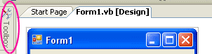
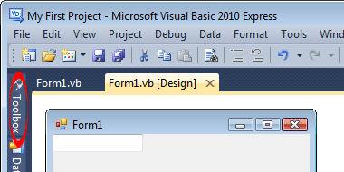
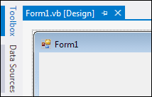
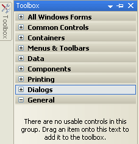
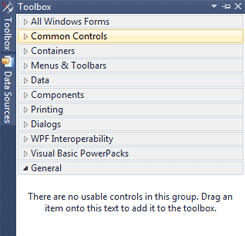
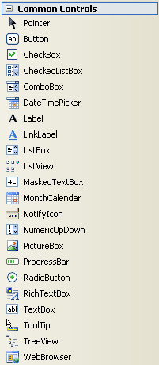

Adding Controls Using the Toolbox
Things like buttons, textboxes, and labels are all things that you can add to your Forms. They are know as Controls, and are kept in the Toolbox for ease of use.
The Toolbox can be found on the left of the screen. In the picture below, you can see the toolbox icon next to Form1 (VB Net 2008):

VB Net 2010:

VB NET 2012:

To display all the tools, move your mouse over the toolbox icon. You'll see the following automatically appear (the 2012 version looks similar to the one on the right, below):
 
There are seven categories of tools available. The toolbox you'll be working with first is the Common Controls toolbox. To see the tools, click on the plus symbol next to Common Controls. You'll see a long list of tools:

As you can see, there are an awful lot of tools to choose from! For this first section, we'll only be using the Button, the TextBox and the Label.
If you want to keep the toolbox displayed, click the Pin icon next to the X. To close the toolbox, simply move your mouse away. Or just click the word Toolbox again in version 2012.
In the next part, we'll see how to add a textbox to the form.